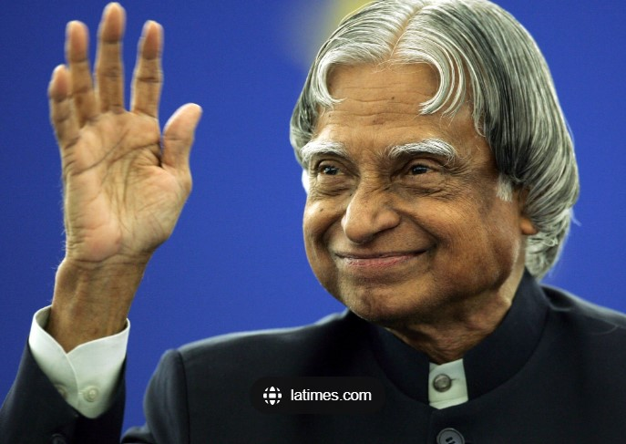

Dr. APJ Abdul Kalam, known as the "Missile Man of India," was a visionary scientist, a beloved leader, and a teacher at heart. He made pioneering contributions to India's space and defense programs, inspiring millions with his wisdom and humility. His lifelong dedication to the nation, particularly in science and technology, remains an enduring legacy.
"Dream, dream, dream. Dreams transform into thoughts, and thoughts result in action."
Achievements & Contributions
- 1969: Joined ISRO and directed India’s first satellite launch vehicle (SLV-III).
- 1980: Key developer of the Polar Satellite Launch Vehicle (PSLV) program.
- 1981: Awarded Padma Bhushan for his service to India's defense and technology fields.
- 1998: Led the Pokhran-II nuclear tests, establishing India as a nuclear power.
- 2002-2007: Elected as the 11th President of India, known as the "People's President."
- 2015: Passed away while teaching students, leaving a legacy of inspiration and dedication.
Timeline of Key Events
- 1931: Born in Rameswaram, Tamil Nadu, India.
- 1955: Completed his degree in Physics at St. Joseph’s College.
- 1960: Graduated in Aerospace Engineering from Madras Institute of Technology.
- 1992: Appointed as Chief Scientific Advisor to the Prime Minister of India.
- 2002: Elected President of India, focusing on youth empowerment and national progress.
- 2015: Passed away, remembered for his contributions to science and youth development.
Quotes by Dr. APJ Abdul Kalam
"You have to dream before your dreams can come true."
"Excellence is a continuous process and not an accident."
"To succeed in your mission, you must have single-minded devotion to your goal."
"If you want to shine like a sun, first burn like a sun."
"Education is the most powerful weapon which you can use to change the world."